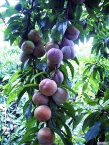

三华李是翁源最誉盛名的名优、特色水果，翁源县三华镇是三华李的发源地，具有悠久的种植三华李历史，有史料记载，三华李种植时间是明朝的嘉靖年间，故三华李有史料记载的种植历史已有近五百年。《辞海》和《中国土特名产辞海》均有记载，三华李是翁源的土特产。 三华李属于蔷薇科，中国李属中一种，最早在广东翁源县三华李种植而得名，三华李果肉含有丰富营养物质，肉色深红，气味芳香，肉质松脆爽口，无涩味，果味清甜。成熟期在农历芒种到夏至之间，史有“岭南夏令果王”之称。三华李品种有大蜜李、鸡麻李、小蜜李等品系，其中大蜜李、鸡麻李在翁源及其他地方推广最多。
 |
|
|  |
九仙桃，因产于“中国九仙桃之乡”翁源县江尾镇九仙村而得名。从明朝嘉靖年间开始种植，至今有近五百年栽培历史。九仙桃属我国南方硬肉桃品系，具有果大、核小、肉厚、果肉离核、含糖量高等特点。九仙桃果实外观粉红色，果身饱满、肉质脆、化渣、清甜，平均单果重达200克以上，果长圆形，果实顶点尖小弯曲凸起，肉质爽脆，风味独特,栽植主要分布在龙仙、江尾、坝仔等地。[1] 熟时皮红透白，肉清白脆嫩，清甜爽口。含可溶性固形物16%，酸0.13119%，还原糖2.9245%，蔗糖8.1916%，全糖11.1161%。被列为上乘优质水果。
翁源兰花是有“中国兰花之乡”称号的广东翁源县培植的兰花，翁源属中亚热带季风气候区，地形为山地丘陵地带，具有明显的山地气候特征，温暖湿润，雨量充沛，非常适合兰花的生长。翁源兰花主要有蝴蝶兰、金边兰、墨兰等品种，以叶面油绿、无黑斑、根粗茎壮、花儿个大色艳、抗病性强而著称。
Copyright © Hejom 2017 by www.hejom.win all rights reserved
未经授权禁止转载，摘编，复制或者建立镜像，违者必究法律责任
phone:0751-2681000 Emai:1516161651@163.com